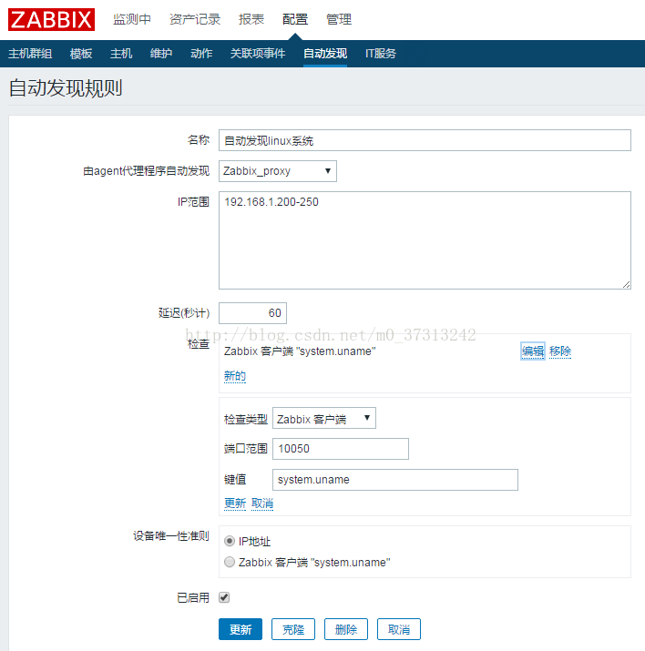

原
[Zabbix] 自动发现&动作
2017年08月02日 14:44:24
阅读数：721
1、若要开启自动发现，则 server 或 proxy 需配置：
### Option:StartDiscoverers
# Number of pre-forked instances ofdiscoverers.
#
# Mandatory: no
# Range: 0-250
# Default:
# StartDiscoverers=1
2、配置--自动发现--创建发现规则

3、监测中--自动发现

4、配置--动作--事件源【自动发现】--创建动作


5、配置-主机